c. 850
The First Landing
The sagas disagree on whether there were seven boats or nine, and on the name of the woman at the steering oar. They agree about the fog.
It was already there when the boats came in, sitting on the water as though it had arrived first. The hawk banners at the mastheads hung dead. The clans anchored in a bay that had no name, in country that gave back no echo. On the second morning the steersmen held up their sunstones and found no sun to hold them against. On the third they loosed a raven, and it circled the mast until it dropped back to the deck. On the fifth they stopped trusting the shore.
Within two generations the settlement at Northern Bay was empty. No saga records a battle, a plague or a famine. The clans left one household at a time, and the old people said afterward that the place had been listening. They went south along the coast, past the forests and the hills, until the land opened into water: long glacial lakes, green shores, and air that returned a man's voice to him. They stayed.
The fog is still there. Ships still lose their compasses in it.
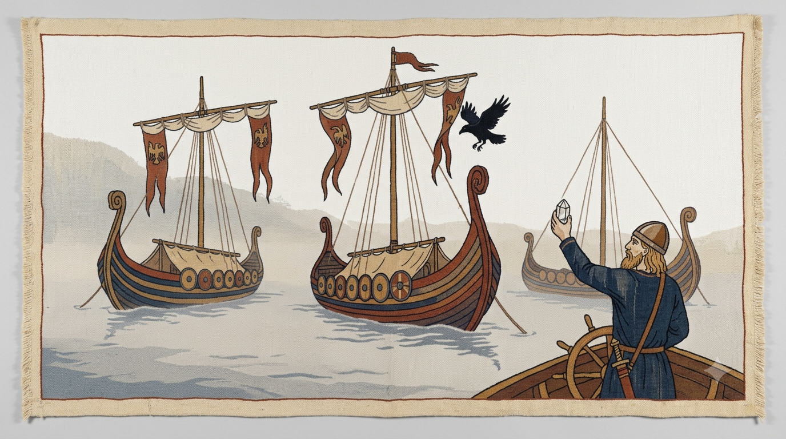
c. 850–1850
The Long Quiet
For a thousand years the Velmar were fishermen and farmers who happened to own an island. They lived in the fjords and the lake basins under hereditary clan-lords, and they kept their history as saga, which is not a record but an argument that has been polished until it sounds like one.
At the island's center, high in a mountain valley where no clan could claim the water, stood the Hall at Valdren, the seat of the people. Once a year, at midsummer, the clans met there to settle feuds, sell fish, arrange marriages and play hall-ball, a rough game with a stuffed leather ball and no fixed number of players. The Wardens who kept the Hall were always of one family, and the family took the name of the place.
Nobody sailed to Northern Bay. On the north-east cliffs, coast keepers rang fog bells at dusk, in case something out there wished to be reminded of the way home. Nobody could say why, so everybody kept the custom.
The island was not hidden on purpose. The fog belt off the north-east, and the way instruments went wrong for a long way around it, kept Velmora off the charts until steamships and chronometers turned the sea into a road. A few Norwegian fishing boats knew the eastern coast, and the clans traded with them for salt and iron nails. In the 1840s a British survey steamer put into an eastern harbor and drew a chart, and the outside world learned there was a country here.
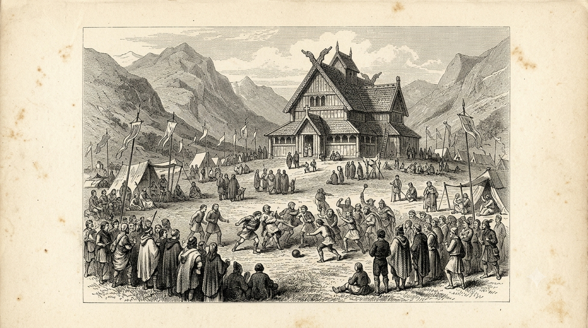
c. 1850s–1880s
Ore, Iron, and Arrival
Coal and iron ore were discovered inland, first in the Eastern Reaches, where the hills come down to the forest, and later in the Northern Highlands. The clan-lords owned the land, but fishermen do not dig, so they sent across the eastern water for people who did. The Kovarai (their word for smith is kovar) arrived in growing numbers from the 1850s: miners, foundrymen and railwaymen, a people who had been reading iron for as long as the Velmar had been reading weather.
The clans were not fools. They could see what a crowd of strangers with skills and no land might become, and around 1856 they drew the Line along the western edge of the Eastern Reaches, where the forested hills give way to the mountains of the interior: a chain of stone cairns, customs posts and gates. East of it lay the leased districts, the ore and the quays. West of it lay the Velmar, the farms and the Hall. When coal was found in the Highlands in the 1870s the Line was redrawn to fence those coalfields as well, so that it ran as a great L with its corner at Braknov. A Kovarai worker crossed it only with a pass, and a pass was only ever issued going east.
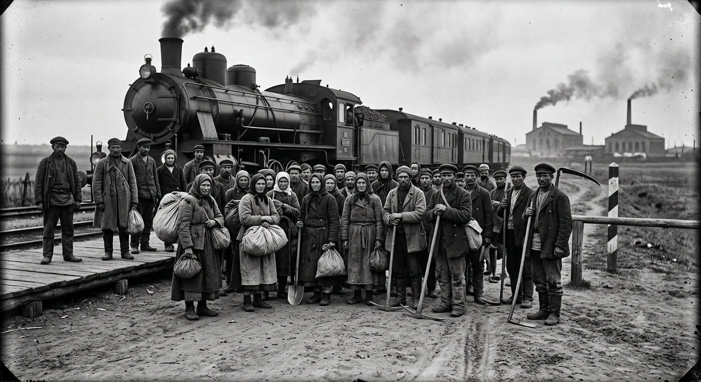
British traders came first, to the ports. Then came British engineers, contracted to build the railways that joined the eastern quays to the mines and, in time, the mines to the capital. They brought football with them as they went. It was played on Saturdays at the railheads, in shirtsleeves, on ground cleared with Kovarai picks. The first game anyone recorded, at Lurngrad Junction in 1873, set an engineers' side against a foundry side and drew three hundred spectators, most of them railwaymen who had never seen a ball played with feet but understood at once who was supposed to win.
The engineers named their teams the way they named everything at home: Rovers, Wanderers, Athletic, Town. The Kovarai unions raised teams of their own and named them for the movement, and so Spartak, Dynamo and Lokomotiv appeared beside the Rovers. Velmar farm lads came to watch, then to play. Hall-ball had left them with a taste for it.
The Line kept the two peoples apart everywhere except one place. At Braknov, beside the customs post, someone laid out a pitch and painted its halfway line across the cairns. The Velmar side kicked off from the west and the Kovarai side from the east, and for ninety minutes the Line was something you could pass a ball over. Nobody wrote the fixtures down. Braknov has been arguing about the score ever since.
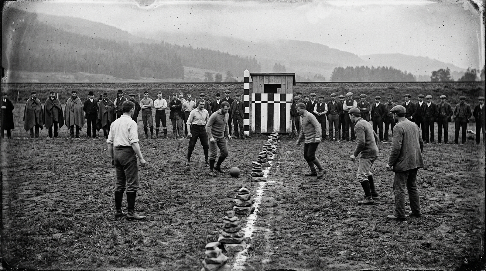
1891
The Great Collapse
Years of dispute over land and labor between the Velmar clan-lords and the Kovarai unions broke into open conflict. It was short, and it was decisive. The clan-lord system did not survive it.
In the winter of 1890–91 the clan-lords raised the ore leases and cut the wages in the same month. The unions struck. The clans called out their militias, and the railwaymen, who held the only railway in the country, stopped the trains. Without rails the militias could not move. With rails the unions could go anywhere. The war lasted six weeks. The Line broke at Braknov in the fourth. Union columns rode into the central valley in the fifth, and in the sixth the Warden of the Hall, Lord Kaelan Valdren, ordered its gates opened.
The two peoples name it differently. Ask a Velmar and it was the Collapse. Ask a Kovarai and it was the Uprising. In Braknov, where it was decided, they say the Great Eastern Uprising, and nobody there has ever felt the need to choose.
The Velmar: the Collapse
The Hall fell on a Tuesday. We had held the moot at Valdren since before the flood-stones were cut, and by Wednesday there were men at the gate who could not read our oaths. Nobody had asked the fishermen. Nobody had asked the mothers. They call it a reckoning. We call it the Collapse, because that is what it was from inside a house that had stood a thousand years.
The Kovarai: the Uprising
It was not a fall. Nobody falls who was standing in the road. We stood up. The Line was a rope they had tied round our necks, and for thirty years we carried their iron and their coal across it with our passes in our teeth. Do not tell us the house was innocent. We laid its floors.
A third account exists. It does not say.
Football was suspended nationwide by telegram. Most clubs of the old order, whose names were English or Velmar or both, folded within a year, and not one of them survives today. In the villages the game went on for a while out of stubbornness, on frozen meadows, with someone posted to watch the road. It was the only entertainment left in a country that had run out of it, and the one place where nobody was asked which side they were on. But every meadow stopped in the end, on the Saturday the fighting reached it.
Except one.
Nobody agrees where it was, and nobody agrees who they were. The country has never settled which town the eleven came from, and the question has become a small national pastime of its own. Braknov says the pitch was theirs. Drosna says the same, and so do the lake villages, the Highland townships and at least two towns that did not exist yet. The one thing every version shares is what they did. They read the telegram and went on playing. They played the next Saturday and the one after, through the weeks in which the rest of the country was burying people, and when the fighting came close they did not stop for that either.
The usual reading is not that they were brave. It is that they were tired. The war had not asked them to be soldiers or deserters. They had looked at both futures on offer, the clan-lords' and the unions', and found no place in either for a game, so they did not argue. They played. As long as the match was on, the war was happening somewhere else. They knew the happiness was borrowed, which is exactly why they would not let the whistle go: the day the game ended, the truth would walk back onto the pitch with everyone else. They had, the story says, quietly given up on the country's future, and they did not want to be present for its end.
When they finally left the field, they did not go home. They went north, into the mist. It is the one detail of the story the Velmar do not find strange. Their own ancestors had left that same bay because it seemed to be listening. The eleven walked back in because nothing else was.
No records exist of them. No one knows their real names. Some say they were the greatest team in Velmora and lost themselves to a deal gone wrong. Some say they were only ordinary players who refused to stop playing. Some say they crossed into a realm where matches never end. Velmoran football calls them the Vanished XI.
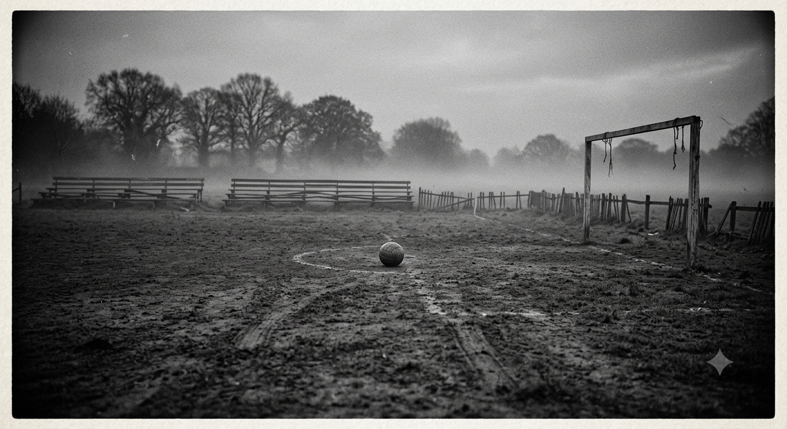
1891–1903
The Charter
Velmora was reconstituted as a republic in the autumn of 1891, in the Hall at Valdren, in a room that still has the clan-lords' wall-hangings and, nailed above them, a union banner.
The Charter of Valdren did five things. It ended clan-lord rule by law. It abolished the Line. It recognized the unions. It placed the clan families' lands in a trust, the Crown Estate, to be managed for the common good. And it allowed several old Velmar families to keep their "Lord" and "Lady" titles as courtesies, with nothing left to govern but the manner of governing. The last clause cost nothing and bought a great deal of goodwill. It is the reason a republic of unionists and schoolteachers still has clubs called Royals and Korona and a great many ceremonial banners. The crown in Crown Estate was never a king's. It was the bronze hawk-crown the Hall's speaker wore at moot.
The flag came after the Charter: a gold hawk on navy. The hawk was the clans', the gold was the forge-light of the Kovarai, and the navy was the sea both peoples had crossed to get here.
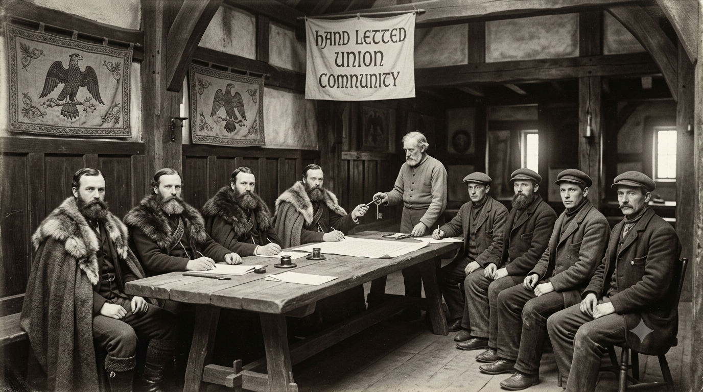
The old clubs were gone, and nobody hurried to found new ones. It took five years before eleven delegates, six from the lakes and the western farms and five from the foundry towns (which was no accident, and which nobody has ever admitted), constituted the Velmoran Football Association in 1896. The first club of the republic followed in 1899: Stravna Velkomir, on the southern lakeshore, its name meaning great peace. In 1900 came Ostravaj Korona, the first club endorsed by a noble estate, and the clan-lord houses' first attempt to buy back a little relevance. In 1904 the Association applied for recognition by the world governing body, the year it was itself established.
In 1899 the republic began its first great public work, on the moot field beside the Hall: Stadion Valdren, raised to hold 62,500 in a country of two and a half million, and open by 1902. It was too big for the team it had. The country was expected to grow into it.
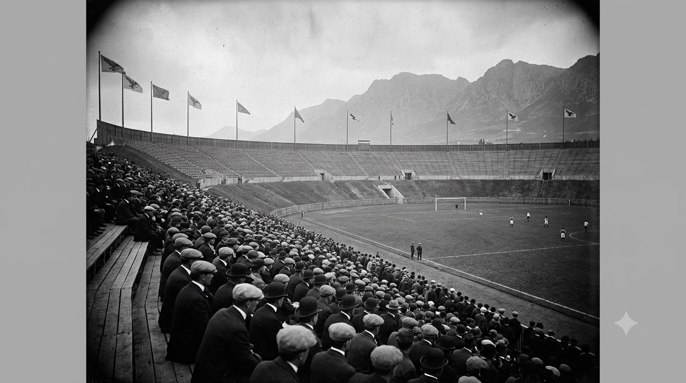
And in 1903 a new club was founded in the capital. Valdren Atletika grew out of the Valdren Ironworks, the one great industrial enterprise that Lord Kaelan Valdren had kept, and the one that employed both peoples: Kovarai foremen on the floor, Velmar clerks in the office. He put up the money. The union named the squad. The captain was a Kovarai foreman and the goalkeeper was a fisherman's son. The badge carried an eagle for the clans and a gear for the forge, and nobody could tell where one ended. It was built from the start to carry both peoples' names in one badge.
It was also the club of the man who had opened the gates, and that is the part people keep quiet about. To half the country Valdren Atletika was the proof that reconciliation could work. To the other half it was the proof that an old lord had bought his way out of the Collapse and named the receipt after himself. Both readings are still argued at Braknov whenever Valdren come to town.
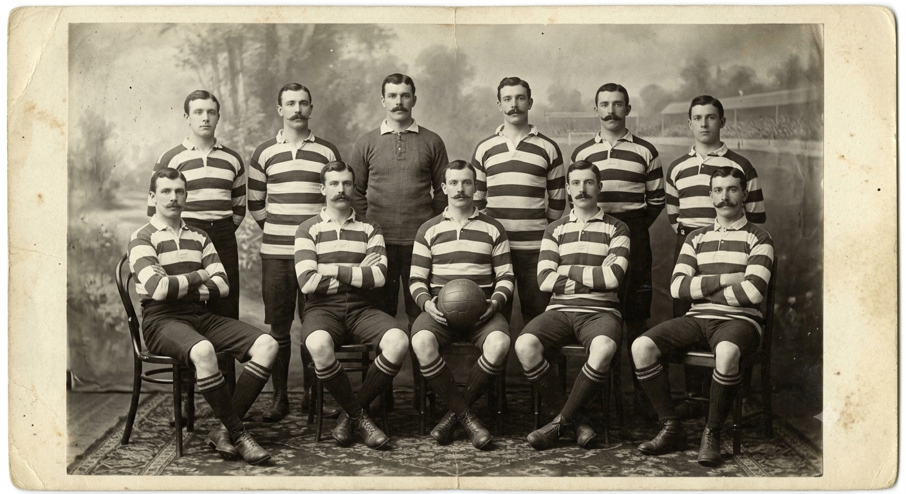
1900s–1950s
The Founding Boom
Clubs were founded across the country by the hundred: schoolteachers, foundry unions, farming cooperatives, church halls, officers' messes. Most of the clubs playing in Velmora today were born somewhere in this half-century. Most of the clubs founded in it did not last, and the seventy-six that remain are the survivors of a pyramid that once had thousands of sides, most of them named for a pub or a pit.
The patrons came first. Drosna FK (1905) and Hearthside United (1907) were founded by lakeside merchants and teachers, and Radomir Eagles (1908) by the House of Radomir, still supported by the Crown Estate. The unions followed: Sevrin Lokomotiv (1912) began as a railwaymen's collective, and Dockside Union (1914) as stevedores and port clerks. Old Karnov Grit (1910) was founded before anyone in Karnov had seen a drill rig.
The Line had gone, but not the garrison. From 1914 to 1918, with the great powers at war elsewhere, the republic kept its eastern garrison in the old Line towns, and in 1918 the officers' football turned into an institution, the Armed Sports Foundation, which paid for Braknov Spartak and a ground called the Bastion. Twenty years later the old officer families of the vanished clan-lord system started a school sports programme for their sons, and it grew into Braknov Royals. The two clubs stand on opposite sides of Braknov and play each other twice a season in the Guard and Crown derby. It is the Great Eastern Uprising in ninety-minute installments.
Around 1920 the first organized league produced its first recorded champions, Old Karnov Grit, who went on to win eleven titles by 1976. The next year, in the Western Plateau, a second ore rush began. With the Line abolished, Kovarai families could move where the iron was, and they crossed the whole island to Karnov and the foundry towns of the Plateau, which went up like the eastern ones had, thirty years on. Karnov Ironfields was founded in the middle of the rush. By the 1930s everyone in the country supported someone. Zarnov Union (1927), founded by riveters and foundry hands, belonged to its members, and its supporters' trust still owns it.
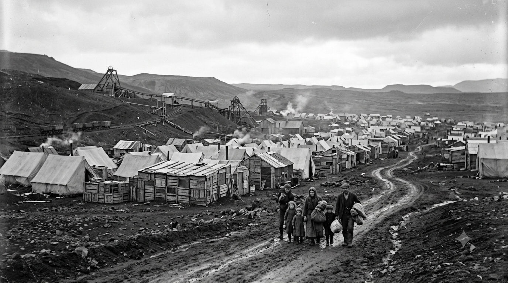
1940–1945
The Coast Occupation
The republic was neutral, and it was not left alone.
In the spring of 1940 a foreign power put troops ashore in the ports, along the west and south coasts and at the shipyards of Velmorsk, for their weather stations and their convoy anchorages. The Highlands and the interior were never occupied. The railways, run by Kovarai unions, were a different matter, and for five years the whole of central Velmora lived on rumors of what the railmen were willing to stop.
Football went underground, and the stories are the best of the country's second history. FC Zoryn Vatra (1941) was founded by resistance workers as a club with no ground, meeting at a different farm every week and using the match as cover for passing messages. Vatra means fire, the kind you keep alive by hiding it. Little Nest AFC (1941) took in children whose families had been driven off the coast, who had no clan and no union to claim them. Sevrin North End (1942) grew from the highland townships that the rail unions' network could not, or would not, reach. Harborlight Athletic (1943) was formed by lighthouse crews and coast guards on blackout patrol.
The Association's membership of the world body was kept alive through the occupation by letters carried out through neutral Stockholm. When the coast was freed in the spring of 1945, its secretary produced the whole file, dues paid to date. It is the one story of those years that Velmar and Kovarai tell the same way.
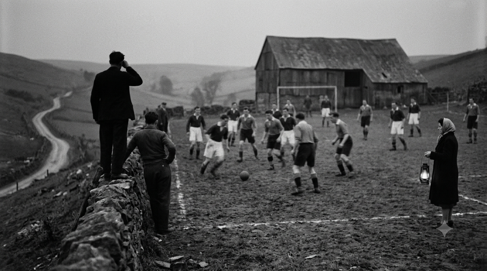
1948–2010
The Compact and the Thaw
After the occupation the republic did the sensible thing and put itself under management. The Reconstruction Compact of 1948 nationalized the railway authority and the power stations and brought the ore industries under a single state plan. It gave the unions a seat at every table and the army a share of every budget. The clubs followed. Sevrin Lokomotiv became a state-backed dynasty, with four league titles between 1950 and 1983. Braknov Spartak was secure under the Foundation, and Kresna Dynamo grew up around the highland power stations. Meanwhile the old patron clubs, the Royals and Radomir Eagles and Korona, kept winning quietly on their endowments, which turned out to be the most durable kind of money.
In 1954 the Association was a founding member of the continental body, half a century after it had joined the world body. In 1967–68 Valdren Atletika, the league champions of the year before, went into the European Cup, the competition later renamed the UEFA Champions League. They won the league and the Velmoran Cup at home and the European Cup abroad. It is still the country's only treble.
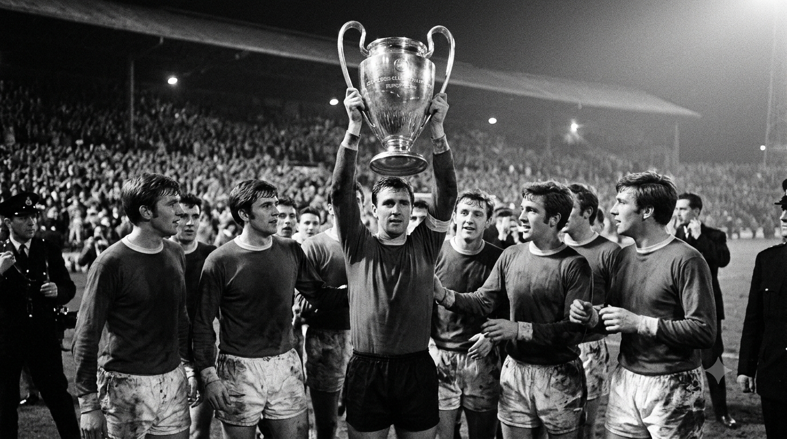
The Compact lasted until about 1990. It ended the way these things do, with mine closures and a change of mood, and the changes that took Lokomotiv's guaranteed budget away are remembered as the Thaw. Football turned commercial. The 1990s and 2000s produced clubs that belong to neither founding story: Velmorsk City (1995), born of a marina development; Novastral Zenith (1997) and Novastral Unity (2003), both out of the technical university; and Velgrad '04, a media project with no clan history and no union roots. The old clubs found new owners, some of them foreign, to the annoyance of purists.
The old arguments did not go away. They only changed venue.
Today
The Hawks
Velmora's national team plays as the Hawks, out of Stadion Valdren, in the capital city built to hold both peoples' names. They wear navy and gold. Their badge is the same hawk that flew from the clan masts a thousand years before the republic, with the same wary eye. Their supporters call them Hauken, and eleven is a number Velmoran football has never taken lightly.
By tradition no club plays a league match at Stadion Valdren. It belongs to the Republic, not to anyone. Valdren Atletika are the most decorated club in the country and the most resented, and both facts have the same cause. They play at the Titan Forge Arena, on the Ironworks' own ground. The Velmoran Cup Final is the one day a club sets foot in the national stadium at all.